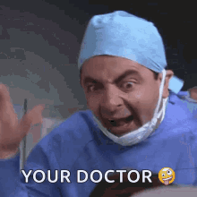
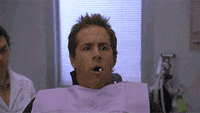
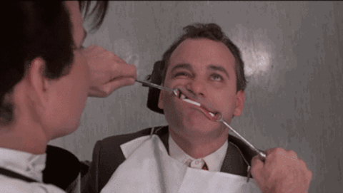

Our Mission
Dr. Bhavik M. Patel is a dental superhero, fighting bad oral health one smile at a time! He
may not have a cape, but he has a killer dental toolkit that can conquer cavities and transform crooked teeth into
straight ones. At his Buford, GA office, Dr. Patel works tirelessly to give his patients the healthy, beautiful
smiles
they deserve.
During your initial consultation with Dr. Patel, he will make you feel as comfortable as a
snuggly blanket on a cold winter day. You'll feel like you're chatting with an old friend as he asks you about your
dental goals and develops a personalized plan to achieve them. And if you're nervous about the upcoming treatment,
Dr.
Patel will soothe your fears with his superhero calming powers.
Dr. Patel's commitment to excellence is stronger than Superman's abs. He stays up-to-date
with the latest dental advancements through continuing education, and he educates his patients on how to maintain
their dental health like a boss. He'll even give you a high-five (with a gloved hand, of course) when you've done an
excellent job brushing and flossing.
And don't worry about COVID-19 because Dr. Patel is a germ-fighting ninja. He's implemented
strict infection control protocols that would make even the Avengers proud. So, you can relax knowing that you're in
good hands, and you won't leave his office with a kryptonite-like virus.
So, if you're ready to be a dental superhero like Dr. Patel, schedule a complimentary
consultation at his office in Buford, GA, and get ready to transform your smile and improve your dental health!
The Team!
Not an actual representation of our team!
Our team may not be as handsome as these figures suggest; we are much crazier !!!
How it actually is... ↓↓↓
Dr. Bhavik M. Patel
Doctor of Dental Surgery; Founder Gravel Springs Dental; Former Phlebotomy Technician
At the beginning of his journey to becoming a respected member of the dental community,
Dr. Patel worked as a Phlebotomy Technician. During this time, he developed his skills in patient care and
attention to detail, which proved invaluable in his future career as a dentist.
After realizing his passion for helping patients achieve healthy and beautiful smiles,
Dr. Patel pursued a Doctor of Dental Surgery degree from Virginia Commonwealth University. He honed his skills
in
patient care and attention to detail, becoming a skilled dentist. Dr. Patel has since become a respected member
of
prestigious organizations, such as the American Dental Association, Georgia Dental Association, and Northern
District Dental Society.
Dr. Patel's extensive education and professional affiliations make him a trustworthy
professional in the dental community. Patients can trust that they are in good hands with Dr. Patel.
As a fun fact, Dr. Patel's favorite tooth is the molar, or as he affectionately calls
it,
"the workhorse of the mouth." He often jokes that he loves molars so much that he dreams about them at night!
But in all seriousness, Dr. Patel is dedicated to providing his patients with the best
dental care possible. He believes that a healthy, beautiful smile can improve overall health and boost
confidence.
So don't be afraid to visit Dr. Patel and let him work his magic on your pearly whites. He promises not to bore
you with too many tooth puns (unless you ask for them, of course!).
Meet the staff!
Gretchen

Dental Assistant
Gretchen is a skilled dental assistant who is passionate about providing quality care to patients. She has completed extensive training in dental procedures and is proficient in taking X-rays, sterilizing equipment, and assisting with various dental procedures. Gretchen has a friendly and welcoming demeanor that helps to put patients at ease, making them feel comfortable during their visits. She is a valuable member of the dental team and plays a critical role in ensuring that the practice runs smoothly.
Sarah
Dental Assistant/Front Desk
Introducing Sarah, the dental assistant/front desk receptionist extraordinaire! With her expert juggling skills, she can handle patient inquiries, appointments, and assist the dentist with procedures without breaking a sweat. Her quirky sense of humor and upbeat personality make every patient's visit to the dental clinic more exciting than a rollercoaster ride. In fact, she's so good at making people smile, some patients visit the clinic even when they don't need dental work, just to chat and share a laugh with Sarah. Her colleagues often joke that Sarah should quit dentistry and become a comedian, but they know that they wouldn't be able to run the office without her.
Rona
Dental Hygenist
Rona, the dental hygienist, is not just any regular teeth cleaner. She's a professional floss ninja who can fight plaque and tartar like a boss! With her friendly smile and gentle touch, she'll make you feel like a superstar as she works her magic on your teeth. And if you have bad breath, don't worry because Rona's got your back. She knows all the tricks to freshen your breath, from minty toothpaste to her secret weapon: a tongue scraper. She'll even throw in a joke or two to make you laugh (or at least chuckle with your mouth open). Rona is passionate about oral health and loves to teach her patients about the importance of good dental hygiene. She'll tell you all about the do's and don'ts of brushing and flossing, and she'll even give you a gold star (or maybe a sticker) if you do an excellent job. And if you're a little nervous about getting your teeth cleaned, Rona will put you at ease with her bubbly personality and witty banter. So, if you're looking for a dental hygienist who's not only an expert teeth cleaner but also a comedian in disguise, book an appointment with Rona! She'll have you smiling brighter than the sun in no time.